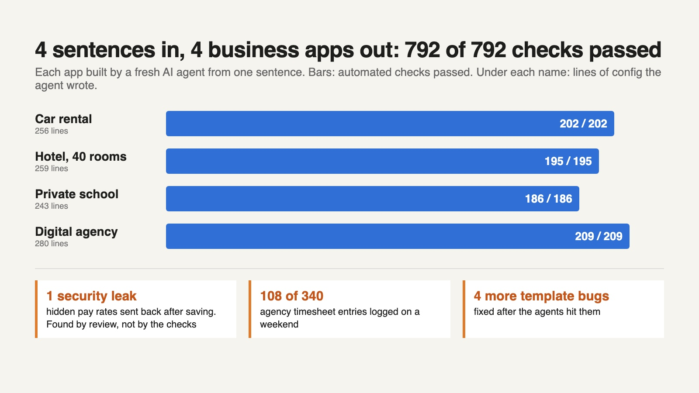
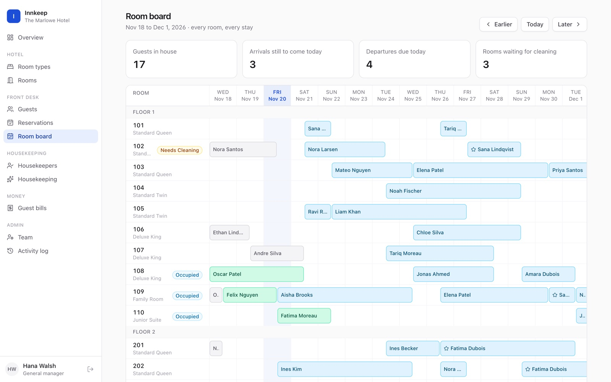

I gave 4 AI coding agents one sentence each. They built 4 business apps that passed 792 checks, and the checks still missed a security leak
- The test: four fresh AI coding agents, each given one sentence: a car rental company, a 40-room hotel, a small private school, a digital agency. Each had to build a working admin system with sign-in, roles, rules and demo data.
- The result: all four passed their automated checks, 792 of 792 in total. Each also built a working special screen: a fleet board, a room board, an attendance register, a weekly timesheet.
- The catch: passing every check did not mean correct. A second read found a security leak, timesheets logged on weekends, and four bugs in the shared template.

Ask an AI coding agent for "a system for my hotel" and you usually get something that looks right on the first screen and breaks on the second click. I wanted to know what it takes to get something that holds together, and how much you can trust the agent when it says "done".
Disclosure first: the setup I used is my own free, open-source project (backoffice-skill on GitHub, MIT licence). Everything below, including the configs and screenshots, is in that repo, so you can check my numbers.
The setup: the agent writes one file, then has to prove it works
Two rules made the difference.
- The agent does not write the app. It writes one config file that describes the business: the sections (rooms, reservations, guests), the fields, the roles, the status steps such as "Check in" and "Check out", and the rules such as "no two reservations for the same room on the same night". A template turns that file into the database, the server, the screens and the demo data. The configs came out between 243 and 280 lines.
- The agent is not allowed to say "done" until a check script passes. The script signs in as every role, creates and edits records, tries to break each rule on purpose, and checks that one organisation can never see another's data. The hotel got 195 checks, the agency 209.
Each agent started fresh, with no memory of the others. The only things it had were the sentence, the template and its documentation.
The four sentences
- "a small car rental company: vehicles, bookings and damage reports"
- "a 40-room city hotel: rooms and room types, reservations with check-in and check-out, housekeeping, and guest bills"
- "a small private school: students, classes, teachers, attendance, exam results and fee invoices"
- "a small digital agency: clients, projects, tasks, time tracking and invoices"
Each agent also built one special screen that fits its business. For the hotel that was a room board: every room down the side, the dates across, and each stay drawn as a bar.

I checked the demo data in the databases, not just the screens. The hotel had 0 overlapping reservations and 0 bills that did not add up. The school had 0 duplicate attendance records and no class over its capacity. In the agency, 0 time entries came before the project started. That part worked better than I expected.
What 792 passing checks did not catch
Then I went looking for problems: in the agents' own reports, in the template code and in the demo data. There were real ones.
- A security leak. In the agency system, team members are not allowed to see hourly rates. The list and detail pages hid them correctly. But when a team member saved a time entry, the server sent the whole record back, rates included. Anyone who opened the browser's developer tools could read them. Every check passed because no check looked at what comes back after a save. It is fixed now, and the check script tests for it.
- Data that is valid but not believable. 108 of the agency's 340 demo time entries fall on a Saturday or Sunday. No rule was broken, because nobody had written a rule about weekends. A real agency owner would notice in seconds.
- Four bugs in the shared template. Demo dates that had to be in the past were all piled onto today. Old records could undo newer ones while the demo data was built (a cleaning task from four days ago freeing a room that was checked out today). There was no way to say "working days only". And the check script ignored the port it was told to use. The agents mostly worked around these, and they only came to light because their reports listed the workarounds.
What I would do differently with AI coding agents next time
- Give the agent less to write. A short config file is far easier to get right, and to review, than a whole app. Most of the quality here came from that one decision.
- Make "done" mean "the checks pass", and write the checks before the agent starts. The agents never got to skip the hard parts, because the script tried to break every rule they wrote.
- Then read it anyway. Checks only test what you thought of. The leak and the weekend timesheets were both things I had not thought to test. A careful review of the code, plus ten minutes of looking at the data yourself, caught what the checks could not.
- Ask the agent for its workarounds. The template bugs showed up in the agents' reports as things they had to work around. If you only read "all checks passed", you miss them.
Limits of this test
- Four businesses, one run each, one agent (Claude Code). Treat this as one honest sample, not a benchmark.
- The apps use SQLite and demo data. They are strong starting points, not something to put live with real customer data as they are.
- The template is my own project, so I am not a neutral judge of it. The numbers and files are public so you can judge for yourself.
- Some weak spots are still open: demo names repeat, the school's parents don't always share the child's surname, and the config cannot yet add up values across rows (so "no more than 10 hours a day per person" is not possible to state).
FAQ
Can AI coding agents build a business app from one sentence?
In this test, yes. Four fresh agents each built a working admin system with sign-in, roles, rules and demo data, and all four passed their checks. They are strong starting points, not apps to put live with real customer data as they are.
Can you trust an AI coding agent when it says done?
Not on its own. All 792 checks passed, but a second read still found a security leak, weekend timesheets and four bugs in the shared template.
How do you test code written by AI coding agents?
Write the checks before the agent starts, and only accept "done" when they pass. The check script here signed in as every role, tried to break each rule and checked that one organisation could never see another's data. Then read the code and look at the data yourself.
Which AI coding agent was used in this test?
Claude Code, with one run for each of the four businesses. Treat it as one honest sample, not a benchmark.
Sources
- The four configs, special screens and screenshots: examples folder on GitHub.
- The check script: verify.mjs.